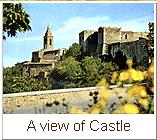

Internet la nuova frontiera
La Pro-Loco di Tocco da Casauria, Metro-Olografix Associazione Telematica e l'Associazione Culturale "la Pergamena Virtuale" organizzano Internet a Tocco, patrocinato dall'Amministrazione Comunale di Tocco da Casauria
Sabato 4 novembre 1995 - ore 20:30
Sala "Michetti" Via del Municipio, 11 - Tocco da Casauria (Pe)
programma
- Ore 20:30 Saluto del Sindaco di Tocco da Casauria
- 20:40 Introduzione del Presidente della Pro-Loco
- 20:45 Relazione del Dott. Andrea Monti, esperto di criminalita' informatica
- 20:50 Intervento di Stefano Chiccarelli, Presidente di Metro-Olografix
- 21:00 Inizio sessioni di collegamento: con il commento di E. Palmerini e T. Mobily (Amministratori di sistema)
- 22:00 Conclusioni
N.B. Nel corso dei collegamenti si svolgera' il dibattito con il pubblico

Metro Olografix ACT 2001 :: copyright dei rispettivi detentori
sito a cura di .nezmar. e ah:pook :: contact: info@olografix.org